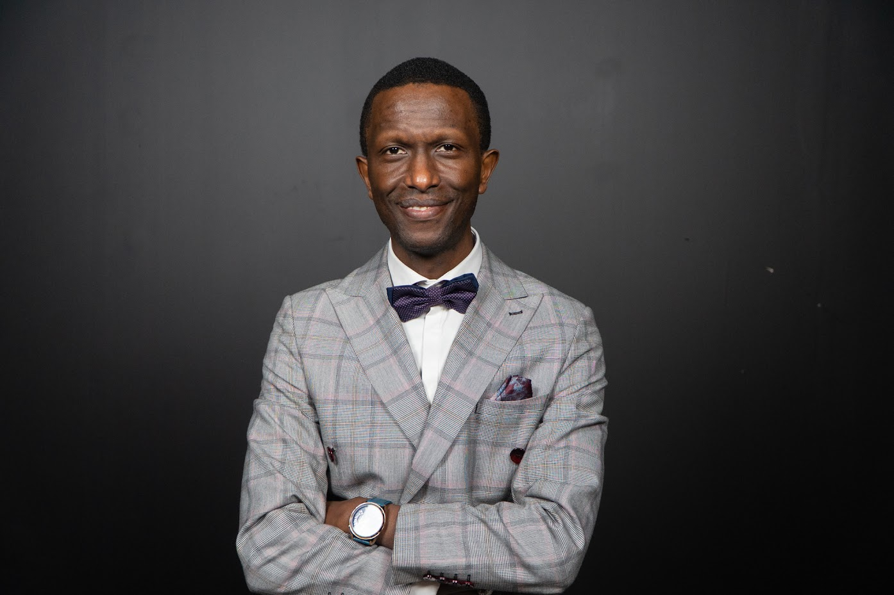
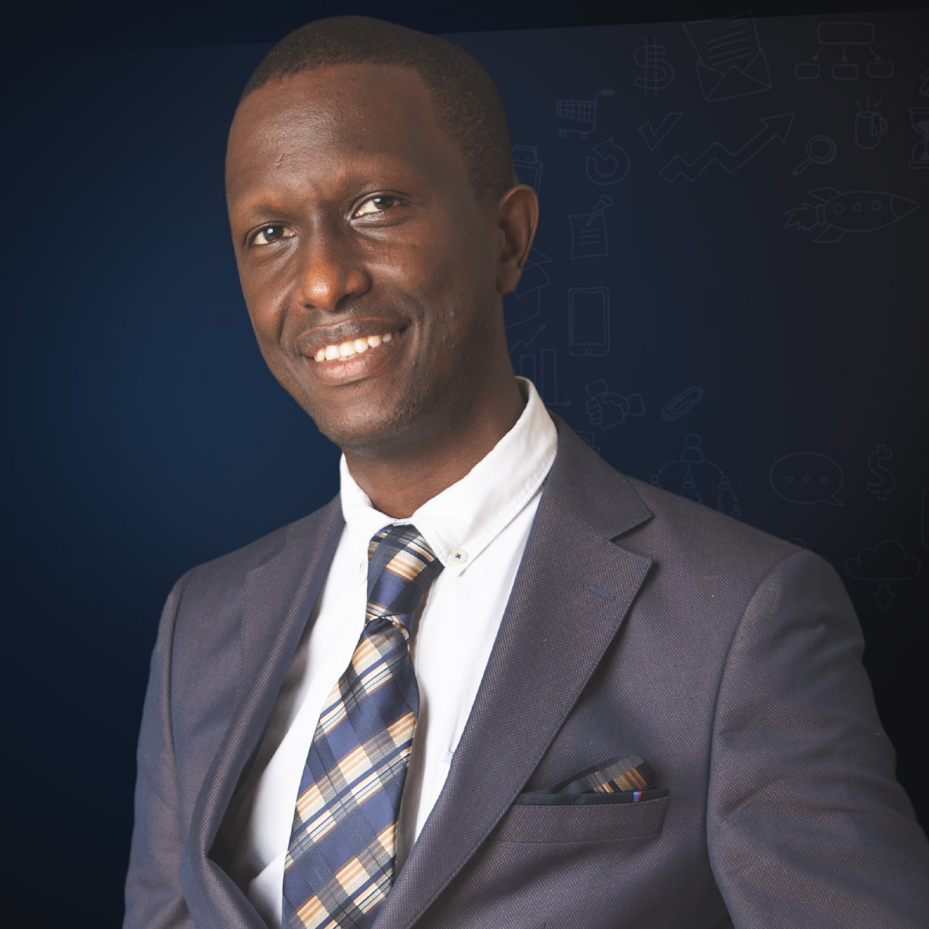
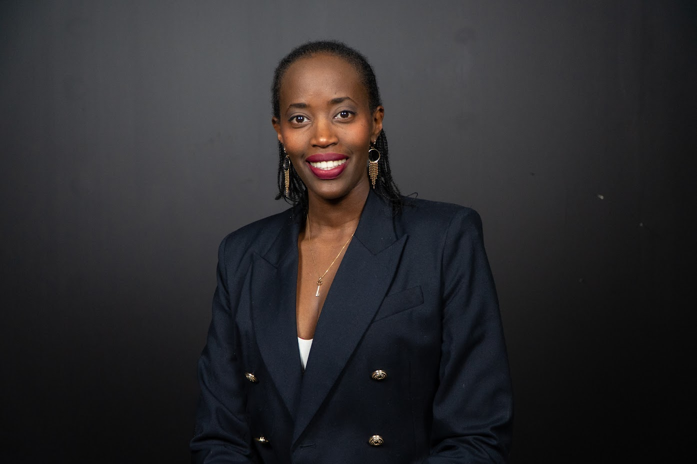

Chief Executive Officer
Claude Buzizi
Founder of Mognetize Marketing and a decade-plus operator across E-Automation and lifestyle businesses. Leads the Foundation's vision, partnerships, and program direction.
The Foundation began with a promise made to a father — Claver Buzizi — who, after the 1994 Genocide against the Tutsi in Rwanda, started a non-charity project in his home village of Bisesero (Kibuye) to help widows and people in need. His son Claude has carried that work forward into a foundation that now serves communities far beyond Rwanda — wherever a meal, a scholarship, or a skill can change the trajectory of a life.
To be a source of warmth — meals, scholarships, and income-building skills — and to gather around it the people who have been kept furthest from it.
Three rays from one source — Feed, Educate, Equip — and the discipline of turning every person we reach into a ray for the next.
A widow in Bisesero, a student in Nairobi, a young mother in Brussels, a family anywhere a need is real — every spark gets the same warmth. The work has no borders. The ray that reaches one person is the same one that, eventually, reaches the next.
Today's recipient becomes tomorrow's giver. That's the only model we believe in.

FounderBorn in Rwanda. Did my primary schooling through P3 in Nairobi, Kenya — where I learned Swahili and where the Maasai people taught me lessons in resilience I still draw from every day. Returned to Rwanda, then later moved to Belgium, where I got married and was finally able to fulfill a long-held dream: making and accepting payments online — something that, to this day, remains nearly impossible for entrepreneurs inside Rwanda.
The Foundation is the continuation of work my late father, Claver Buzizi, began after the 1994 Genocide against the Tutsi — a non-charity project in his village of Bisesero (Kibuye) to help widows and families in need. I built the Foundation to take that work global.
Claude founded the Foundation to route the income, network, and curriculum of the Mognetize universe into the communities he came from. Earning Blueprints subscribers fund meals through Rise Against Hunger. Donors fund scholarships and masterclass seats. The same playbook that built Mognetize equips the next generation of givers.
Read Claude's full story at claudebuzizi.com/mystoryThe Foundation is governed by a working board with direct experience in entrepreneurship, financial stewardship, and community development.

Founder of Mognetize Marketing and a decade-plus operator across E-Automation and lifestyle businesses. Leads the Foundation's vision, partnerships, and program direction.

Oversees the Foundation's financial controls, annual reporting, and grant disbursement. Ensures that 100% of restricted gifts reach their intended program.
An additional director will be named ahead of our next reporting cycle. We're seeking experience in scholarship access and curriculum-based youth programming.
In the aftermath of the Genocide against the Tutsi, Claude's late father Claver Buzizi starts a non-charity project in his home village of Bisesero (Kibuye) to help widows and families in need. The Foundation's roots are here.
Claude is born in Rwanda and does his pre-university and primary school through P3 in Nairobi, Kenya. He learns Swahili, and the Maasai people teach him resilience strategies he still carries today. He later returns to Rwanda.
Claude moves to Belgium, marries, and finally fulfills his dream of making and accepting payments online — a fundamental capability still out of reach for most entrepreneurs in Rwanda. The income engine that funds the Foundation is built here.
Every Earning Blueprints subscription begins routing 20 meals through Rise Against Hunger. The model is proven: business income can become someone else's survival.
The Foundation formalizes Claver's promise and takes it global — Feed, Educate, Equip — serving people wherever a need is real, from Bisesero to anywhere the work is called for.
Every story is told with the consent and the words of the person who lived it.
We measure what changed in someone's life — not how much we spent doing it.
Annual reports, audited financials, and program data — all public, all the time.
We partner with leaders inside the community before we send anything in.
A scholarship today is a mentor tomorrow. We design programs that pay forward.
We bet on the human in front of us — long before they have a track record to point to.
Join the donors, volunteers, and partners building the next chapter of this work.